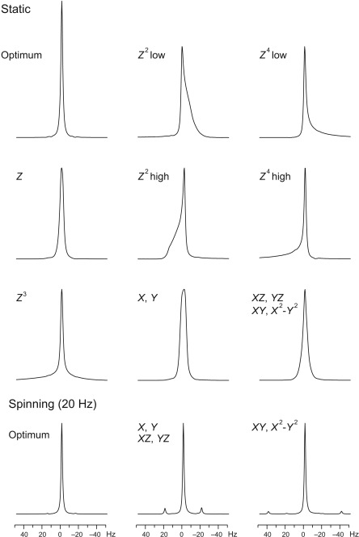

author: Seth Veenbaas
last updated: 9/25/24
Fills are performed weekly for all magnets. Without regular nitrogen fills the helium will boil-off rapidly causing the magnet to quench.
Typical fill schedule.
| Day | Magnet(s) |
|---|---|
| Monday | Neo400, 400NB |
| Wednesday | Neo600, 500 |
| Friday | B600 |
Start iLabs session.
Stop runs.
Magnets on manual mode:
Magnets on automation:
pause automation in Icon.stop automation in Icon.Notes:
Open TopShim
Inject lineshape sample (1% CHCl3 in Acetone)
Magnets on manual mode:
ej Eject sample.ij Inject sample.Magnets on automation:
sx <#> Inject sample from position <#>.rsh <probe> Read the shim file for the probe.
| Probe | Magnet |
|---|---|
| bbfo | Neo400, 400NB, B600 |
| bbo | 500 |
| cryoqnp | Neo600 |
Use the browser to locate the \data\numrsu directory.
Right click the directory and sort by date
Drag the latest lineshape-<DATE> file into the main window.
new Create a new experiment.
Use the pop-up window to adjust experiment settings:
| Field | Value |
|---|---|
| Filename | lineshape-<DATE> |
| Experiment number | 1 |
| Use current param | ✓ |
| Solvent | Acetone |
lock acetone Lock magnetic field to solvent.
atma Automatically tune and match probehead.
wobb Manual tune and match.topshim gui Shim magnet using graphical interface.
| Field | Standard value | Neo400 | Cryo or Neo probes |
|---|---|---|---|
| Dimension | 1D | 1D | 1D |
| Optimization | Solvent default | Solvent default | Solvent default |
| Tune before | z-x-y-xz-yz-z | z-x-y-xz-yz-z | z-x-y-xz-yz-z |
| Tune after | z-x-y-xz-yz-z | off | z-x-y-xz-yz-z |
| parameters | off | convcomp | convcomp |
Neo400: perform tune after in topshim gui
| Field | Neo400 |
|---|---|
| Tune after | z-x-y-xz-yz-z |
| Only | ✓ |
getprosol Reads the probeheads and solvent dependent parameters.
rga Optimize reciever gain.
zg Start acquiring raw data (go zero).
fp FT and phase correction.
apk Automatic phase correction.
Check spectrum for peak symmetry.

humpcal Perform hump test.
Use logbook to determine if hump test is within the normal operating window.
Pass hump test:
Document hump test in logbook:
<date> <initials> N2 fill <small#> <#> <large#> Hz
Fail hump test:
topshim gui Rerun topshim.
| Issue | Optimization |
|---|---|
| Peak wide at half-height | lineshape width |
| Peak wide at base (hump) | lineshape hump |
Fail hump test multiple times:
new and copy experiment name.
wsh <EXPERIMENT-NAME>
Inject chloroform sample (1% Ethylbenzene in Chloroform)
Magnets on manual mode:
ej Eject sample.ij Inject sample.Magnets on automation:
sx <#> Inject sample from position <#>.Use the browser to locate the \data\numrsu directory.
Right click the directory and sort by date
Drag the latest CDCl3-<DATE> file into the main window.
new Create a new experiment.
Use the pop-up window to adjust experiment settings:
| Field | Value |
|---|---|
| Filename | CDCl3-<DATE> |
| Experiment number | 1 |
| Use current param | ✓ |
| Solvent | CDCl3 |
lock cdcl3 Lock magnetic field to solvent.
atma Automatically tune and match probehead.
wobb Manual tune and match.topshim 1D shim.
getprosol; rga; zg Reads parameters; reciever gain; aquire data.
fp; apk FT; phase correction.
Check spectrum for peak symmetry.
Verify that the peak width at half-height is < 0.8 Hz
wsh <probe>
| Probe | Magnet |
|---|---|
| bbfo | Neo400, 400NB, B600 |
| bbo | 500 |
| cryoqnp | Neo600 |
Remove samples and resume normal operation.
Magnets on manual mode:
ej Eject sample.Magnets on automation:
sx ej Eject sample.start Resume automation in Icon.Finish ilabs session.